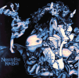

Cloudbusting -- Kate
Bush In Her Own Words
Cloudbusting -- Kate
Bush In Her Own Words

Never For Ever Album
- Released 8th September 1980
Made No. 1 Platinum
Tracks:
- Now, after all this waiting it is here. It's strange when I think
back to the first album. I thought it would never feel as new or as special
again. This one has proved me wrong. It's been the most exciting. Its name is
Never For Ever, and I've called it this because I've tried to make
it reflective of all that happens to you and me.
- Life, love, hate, we are all
transient. All things pass, neither good [N???]or evil lasts. So we must
tell our hearts that it is ``never for ever,'' and be happy that it's like
that!
- The album cover has been beautifully created by Nick Price (you may
remember that he designed the front of the Tour programme). On the cover of
Never For Ever Nick takes us on an intricate journey of our
emotions: inside gets outside, as we flood people and things with our desires
and problems. These black and white thoughts, these bats and doves,
freeze-framed in flight, swoop into the album and out of your hi-fis. Then it's
for you to bring them to life. (1980, KBC 7)

- Without everyone (and the Fairlight) it would never have been the
same. You move me, thank you, you are inspiration.
- There are ten tracks, and if there is a main theme, it's about human
communication and its difficulties.... (1980, KBC 7)
- Each song has a very different personality, and so much of the
production was allowing the songs to speak with their own voices - not for them
to be used purely as objects to decorate with ``buttons and bows''
- Choosing sounds is so like trying to be psychic, seeing into the
future, looking in the ``crystal ball of arrangements,'' ``scattering a little
bit of stardust,'' to quote the immortal words of the Troggs.
- Every time a musical vision comes true, it's like having my feet
tickled. When it works, it helps me to feel a bit braver. Of course, it doesn't
always work, but experiments and ideas in a studio are never wasted; they will
always find a place sometime.
- I never really felt like a producer, I just felt closer to my loves
- felt good, free, although a little raw, and sometimes paranoia would pop up.
But when working with emotion, which is
what music is, really, it can be so unpredictable - the human element, that
fire.
- But all my friends, the Jons, and now you will make all
the pieces of the Never For Ever jigsaw slot together, and It will
be born and It will begin Breathing. (1980, KBC 7)
- It's difficult to talk about the album without you actually hearing
it, SHE EXPLAINS, IN A VOICE SO QUIET I WORRY THE TAPE RECORDER WON'T PICK IT
UP. I suppose it's more like the first album, The Kick Inside, though,
than the second,
Lionheart, in that the songs are telling stories.
- I like to see things with a positive direction, because it makes it
so much easier to communicate with the audience of listener. When you see
people actually listening to the songs and getting into them, it makes you
realise how important it is that they should actually be saying something.
(1980, Smash Hits)
- There are a lot of different songs. There's no specific theme, but
they're saying a lot about freedom, which is very important to me. (1980,
Smash Hits)
- It [Producing] means I have more control over my album, which
is going to make it more rounded, more complete, more me, I hope. (1980,
Smash Hits)
- For me, this was the first LP I'd made that I could sit back and
listen to and really appreciate. I'm especially close to Never For
Ever. It was the first step I'd taken in really controlling the sounds
and being pleased with what was coming back.
- I was far more involved with the overall production, and so I had a
lot more freedom and control, which was very rewarding. Favourite tracks? I
guess I'd have to say ``
Breathing'' and `` The
Infant Kiss'' (1984, Women of
Rock)
-
 An album is
like a diary, really, maybe not a reflection of your own life, but it reflects
changes in your life. Is wasn't until Never For Ever that I was
able to express things the way I wanted. Each album is different though; they
change because I do. (1983, Music
Express)
An album is
like a diary, really, maybe not a reflection of your own life, but it reflects
changes in your life. Is wasn't until Never For Ever that I was
able to express things the way I wanted. Each album is different though; they
change because I do. (1983, Music
Express)
- From here on there are big progressive steps. I was starting to take
control at this point, making sure I had enough time and getting involved in
production. (1989, Tracks)
You started using a fairlight on never for ever.
- Right, I didn't have my own Fairlight and we had to hire one in. And
really as soon as I met the Fairlight, I realized that it was something I
really couldn't do without because it was just so integral to what I wanted to
do with my music. I think I've always enjoyed synthesizers...I found them very
interesting, but I never really enjoyed all the sounds. And what really gets me
about the Fairlight is that any sound becomes musical. You can actually control
any sound you want by sampling it in, and then being able to play it. I mean
obviously, it doesn't always sound great, but the amount of potential
exploration you have there with sounds is never-ending, and it's fabulous.
(1985, Keyboard)
Do you write songs around the fairlight?
- Yes, I do now. This is actually the first album that I've done that
on. Up until now, I've always written on the piano. It's been a very important
part of it. The songs came from the piano and the chords. But with this album,
the majority of the songs have come from the Fairlight and working with drum
machines and things like that. (1985, Keyboard)
Talking
about eerie creatures, on the back cover of the album there's some pictures of
you doing a sort of floating pose of yours [York ???], with your tongue
hanging out, wearing sort of bat clothes. [Kate laughs] that is quite a
cover. I mean, and it is so very important to you, isn't it, sorta of the art
of music. This album, is it a concept or... How do you see it?
- No, it's not a concept but all the songs are very different, that's
really why it's not a concept. But they are joined together in as much each
track is trying to flow into the other, although they're quite separate
entities, they're about different subjects. And the cover was terribly
important because I do feel with home taping, etc., happening, you have to give
people as much as you can on an album. And it's something I've always wanted to
buy, I've always wanted to go in and buy an album I've been waiting for. And
you hold the cover and you think ``oh, this is it!,'' you know, and you sorta
plow through it for any little bit of information. And so that's what I've
tried to do and we've got the most incredible artists...
I can see, it's brilliant actually. I mean it's almost like a sort
of child's book but using very adult sort of.... Adult
paintings, adult drawings, isn't it,
for the cover?
- Yes, it's pencil, it's incredible.
What about inspiration for the tracks and the music, where do you
get most of your inspiration for you music?
- They come from very different sources, but it is mainly people.
Things people will say, whether they say then on
television or to me personally or
even things I hear on the radio. It's very
much stimulus from other people and just the way I feel about things that I see
in other people, because I'm involved with people all the time, they come in
and out of my life. But the thing that is a continuing theme, you know, is
life, people.
There's on or two quite big names actually who are mentioned on the
sleeves of the album, roy harper,
herbie flowers, peter gabriel.
Are they just friends, admirers, or helped it musically, or what?
- Well, they're probably all of those that you mentioned, they're very
important to me, those people. Peter I did some work with and he was very
inspiring and it was very important for me to write something as a gesture. Roy
is on the album. Roy I think is one of the true English poets and so he
definitely needed something said. And Herbie Flowers, he's a very special man,
because he makes everyone so happy. (1980, Never For Ever Debut)
Gaffaweb /
Cloudbusting / Music /
Never For Ever Album